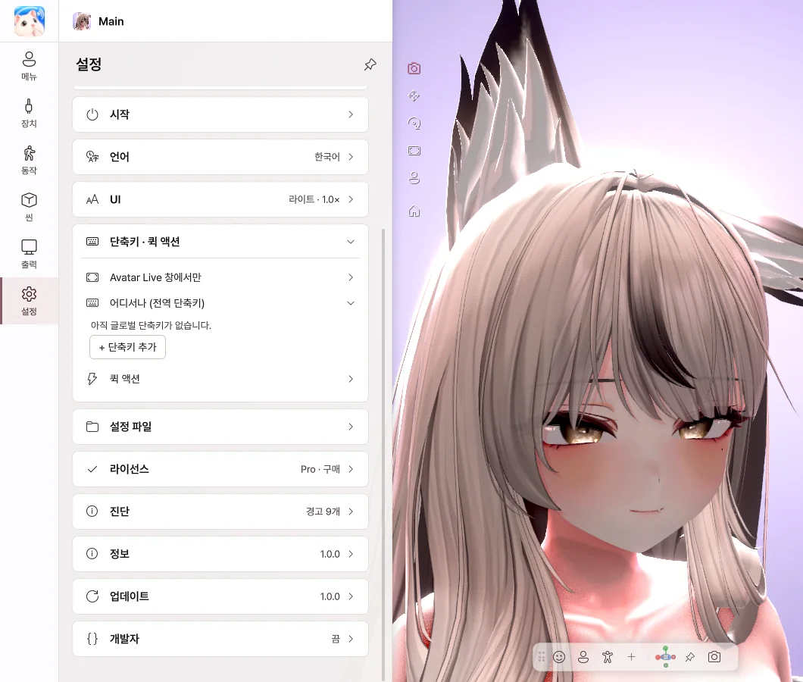

10. 설정
일반 · 창 · 성능

- 시작할 때 메뉴 열기 — 끄면 메뉴 없이 시작합니다.
- 창 — 창 크기, 전체 화면, 항상 위, X 버튼 동작을 정합니다.
- 성능 — 프레임 레이트와 화질을 정합니다. 낮추면 PC 부담이 줄어듭니다.
- 그림자 — 머리카락과 턱이 목과 가슴에 드리우는 그림자입니다. 끄면 GPU 부담이 줄어듭니다.
- 언어 — 한국어 · English · 日本語 · 简体中文
- UI — 테마, 패널 위치, 글자 크기를 바꿉니다.
단축키

- + 단축키 추가를 누르고 동작과 키를 고릅니다.
- 게임 중이거나 Avatar Live가 뒤에 있어도 동작합니다.
- 다른 프로그램의 키 입력은 그대로 전달됩니다.
- 메뉴 버튼과 제스처는 누르는 동안 또는 눌러서 켜고 끄기를 고를 수 있습니다.
라이선스
현재 에디션을 확인합니다.
| 버튼 | 하는 일 |
|---|---|
| 다른 코드 입력 | 다른 라이선스로 바꿉니다. |
| Pro로 업그레이드 | BOOTH에서 구매한 업그레이드를 입력해 Pro로 바꿉니다. |
| 지금 확인 | 라이선스를 다시 확인합니다. |
진단 · 업데이트
| 항목 | 하는 일 |
|---|---|
| 오류 리포트 보내기 | 문제가 생겼을 때 설명과 로그를 보냅니다. 누를 때만 전송됩니다. |
| 로그 폴더 열기 | 로그 파일을 확인합니다. |
| 지금 확인 · 내려받기 | 새 버전을 확인하고 받습니다. |
| 다시 시작해서 설치 | 바로 업데이트합니다. 아바타와 설정은 그대로입니다. |